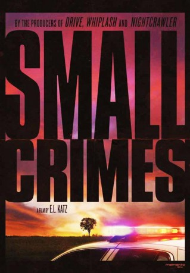

#6092 Small Crimes
 
 IMDB-Wertung: 5.8 / 10
IMDB-Wertung: 5.8 / 10  Tomatometer: 63
Tomatometer: 63  Metascore: 60
Metascore: 60 
Der ehemalige Cop Joe Denton hat wegen versuchtem Mordes an einem Staatsanwalt sechs Jahre im Gefängnis gesessen und kehrt nach seiner Entlassung nach Hause zurück. Eigentlich will er einfach nur von vorne beginnen, und auch wenn sich seine Eltern für ihn schämen und ihn seine Frau mitsamt den gemeinsamen Kindern verlassen hat, denkt er, dass es eigentlich nicht mehr schlimmer kommen kann. Doch da hat sich Joe getäuscht: Nicht nur ist er in seiner alten Heimat nicht mehr willkommen, schnell wird er auch von seiner Vergangenheit eingeholt und findet sich zwischen den Fronten wieder, als ihn sein korrupter Ex-Partner, der besagte Staatsanwalt und ein Mafiaboss für ihre Zwecke einspannen wollen.
Jahr: 2017
Dauer: 90 Minuten
FSK:
Land: Kanada Studio: NetflixTonspuren:
Untertitel:
Auflösung: 1080p (1920x800) Größe: 2969 MB
Genre: Thriller, Drama, Krimi
Regisseur: E.L. Katz
Drehbuch: Macon Blair
Soundtrack: Brooke Blair, Will Blair
Darsteller:
 Nikolaj Coster-Waldau als Joe Denton
Nikolaj Coster-Waldau als Joe Denton Robert Forster als Joe Denton, Sr.
Robert Forster als Joe Denton, Sr. Jacki Weaver als Irma Denton
Jacki Weaver als Irma Denton Molly Parker als Charlotte Boyd
Molly Parker als Charlotte Boyd Gary Cole als Dan Pleasant
Gary Cole als Dan Pleasant Macon Blair als Scotty Caldwell
Macon Blair als Scotty Caldwell- Michael Kinney als Phil Coakley
- Shawn Lawrence als Manny Vassey
 Pat Healy als Junior Vassey
Pat Healy als Junior Vassey- Jasson Finney als Vassey Thug #1
 Larry Fessenden als Earl
Larry Fessenden als Earl- Tara Yelland als Toni
- Derek Barnes als Rooster
 Tyrone Benskin als Chaplin
Tyrone Benskin als Chaplin Jason Cavalier als Drunk Patron
Jason Cavalier als Drunk Patron Gerardo Lo Dico als Prison Guard
Gerardo Lo Dico als Prison Guard- Josephine Rene als Wife of Joe Denton
- Julia Dawi als Elaine Denton (uncredited)
- Josh Ethier als Probation Officer (uncredited)
- Daniela Sandiford als Cara Coakley
- Eddie Holland als Vassey Kid #1
- Anatoly Zinoviev als Vassey Thug #2
- Glen Bowser als Abraham
 Frank Schorpion als Flattop
Frank Schorpion als Flattop- Alex Stines als Young Dude #1
- Stéphane Julien als Young Dude #2
- Roman Angelo More als Vassey Kid #2
- Benoit Gauthier als Taxi Driver
- Freddy Bessa als Prison Guard #1
Datei: X:\2017(N-Z)\Small Crimes (2017, FSK, 1920x800).mkv seit 28.04.2017
Festplatte: HD 2017(A-Z)-2018(A-F)
 Es gibt insgesamt 170 Filme in der Gruppe '2017(N-Z)'
Es gibt insgesamt 170 Filme in der Gruppe '2017(N-Z)'